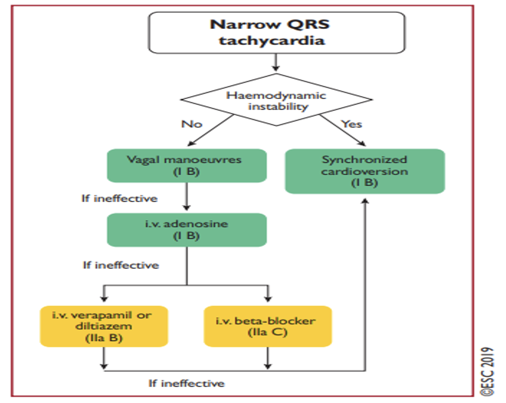
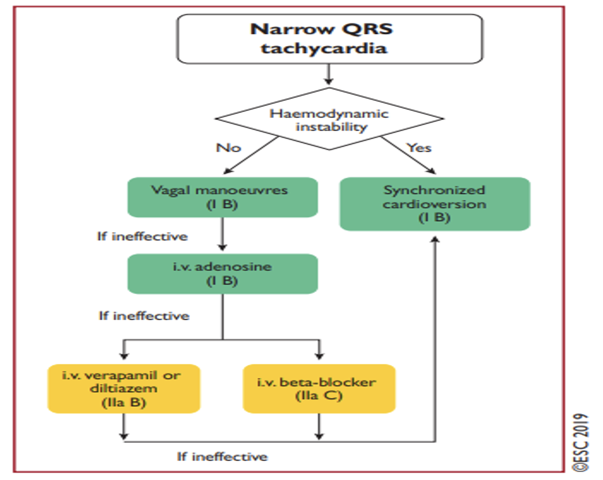

Tachycardie
Auteur:
Dr. Ayoub M'barki
Relu Par:
Pr. Badre El Boussaadani
Dr. Saïd Hamdane
Tachycardie QRS fins et Larges : C’est une augmentation anormale du rythme cardiaque . Elle se caractérise par un augmentation du fréquence cardiaque supérieure à 100 battements par minute . Elle peut être occasionnel ou chronique et peut avoir de nombreuses causes . La réalisation d’un ECG 12 dérivations est un préalable indispensable à la prise en charge d’une tachycardie chez un malade conscient.
Aspect QRS
Fin < 80 - 120 ms
Instable
Stable
Rythme Régulier
Rythme Irrégulier
Prise en charge
Instabilité HD
choc électrique (sync)
Stable
Large ≥ 120 ms
Instable
choc électrique d'emblée
Stable
Rythme Irrégulier
TV Irrégulier
Rythme Irrégulier
 
